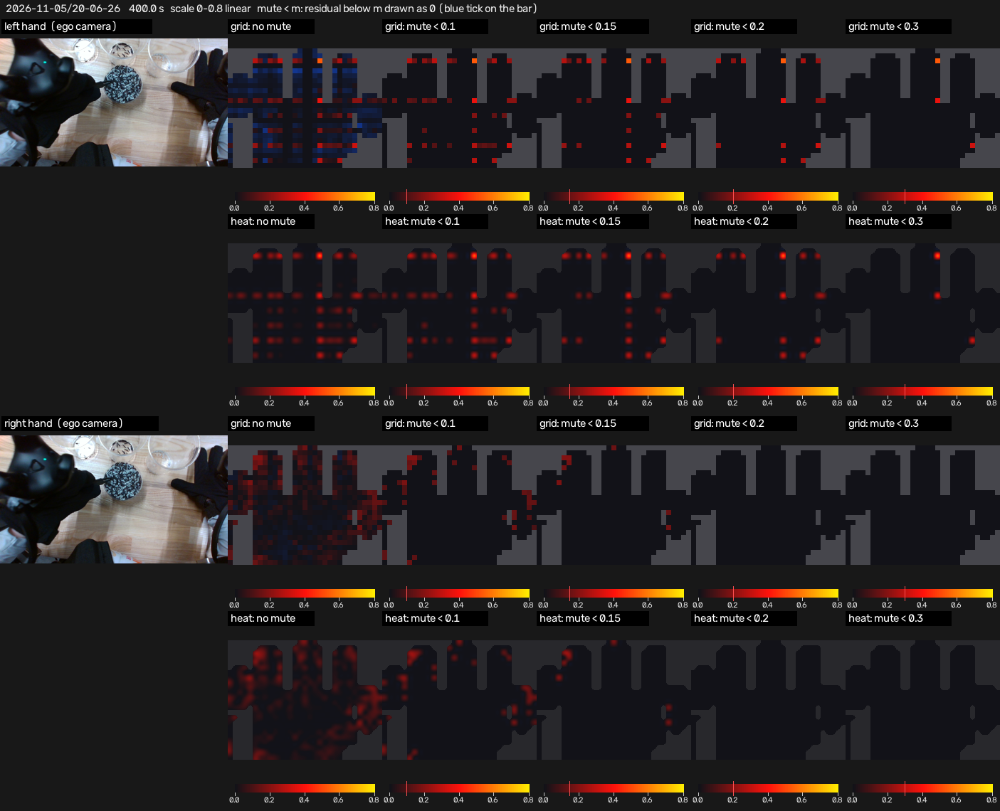
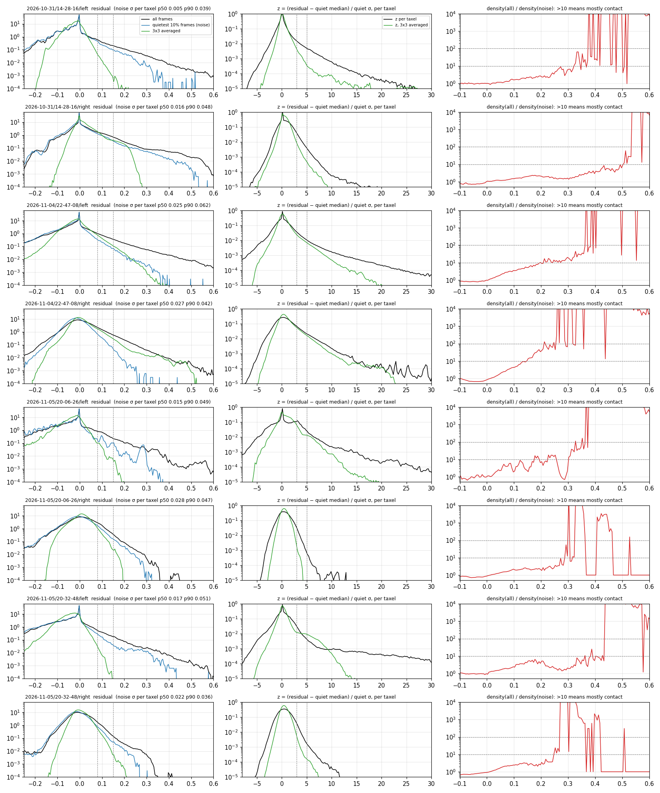
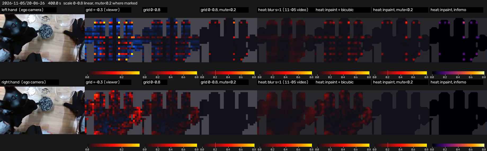

Tactile residual · how to draw it
seven ways of showing the same glove data, side by side · 2026-11-05 · mute thresholds added 2026-11-06 ← other recordings
The glove's tactile residual is measured pressure minus the contact model's predicted no-contact baseline, per taxel (744 slots, 24 × 31; about 526 carry a sensor). Exactly −1 means no reading (no sensor in that slot, or a dead one). Negative values mean below the baseline.
The variants
| panel | what it draws |
|---|---|
grid ±0.3 (viewer) | One cell per taxel, the colour scale of the recording page in the viewer: 0 dark, +0.15 red, +0.3 yellow, negative blue, grey = no reading. Faithful, but 0.05 already looks red, so noise fills the hand. |
grid 0–0.8 | Same grid, 0 → 0.8 linear (red at 0.4, yellow at 0.8). Noise fades; ordinary contacts (0.25 – 0.5 at the strongest taxel) are dark red. |
grid 0–0.8, mute<0.2 | As above, but any residual below 0.2 is drawn as 0 (the blue tick on the colour bar). Only firm presses remain; a light grasp, which sits at 0.1 – 0.2 on most of its taxels, disappears. |
heat: blur σ=1 | What the preview videos drew on 2026-11-05: a Gaussian (σ = one taxel) over the working taxels, normalised so missing taxels do not pull values down, then bicubic up-sampling, cut to the glove's footprint. Every taxel is averaged with its neighbours, so an isolated 0.5 becomes about 0.12 – hence the dim look. |
heat: inpaint + bicubic | Working taxels keep their exact value; only the missing ones inside the footprint are filled from their neighbours (iterated 3 × 3 mean over valid cells). Then bicubic up-sampling. Peaks survive. |
heat: inpaint, mute<0.2 | The inpainted map with residual below 0.2 set to 0. |
heat: inpaint, inferno | The inpainted map on a perceptually uniform colour map (inferno), still 0 → 0.8. 0.3 is already a clear orange here. |
How a missing taxel is filled: the footprint of each glove (by serial number) is the union of slots that ever reported a value in any take, so a slot that is silent in one take but not in others is a dead sensor there and gets a value from its neighbours; slots that never report anywhere are gaps in the hardware and stay grey. The "blur" variant fills by weighting the Gaussian only over working cells (normalised convolution); the "inpaint" variants fill only the missing cells and leave the rest untouched.
Whole preview, two colour scales
What the numbers say
- Strongest taxel per frame: median 0.25 – 0.5 depending on take and glove, 90th percentile 0.3 – 0.6, saturation at 1.0 is rare. The five strongest taxels average 0.2 – 0.4.
- Noise (quietest 10 % of frames): per-taxel σ median 0.02, 90th percentile 0.04 – 0.06, worst taxels 0.13 – 0.15. Heavy-tailed: the per-taxel 99th percentile of noise reaches 0.10 – 0.16 on a tenth of the taxels.
- There is no clean split between noise and contact in the value distribution, nor after per-taxel z-scoring, nor after 3 × 3 spatial averaging (figure below). The ratio of overall to noise density first exceeds 10 somewhere between 0.15 and 0.5, never below 0.1. In 98 – 100 % of frames at least one taxel is above 0.15.
- The SDK's binary contact output is 0 for the whole take on both hands, so it cannot serve as the threshold.
- Left gloves spend most of the time below the baseline (blue), i.e. the baseline trained on 2026-10-31 has drifted; some rows light up together (a row-level artefact of that glove).

Left column: residual density (log), all frames in black, the quietest 10 % of frames in blue, after 3 × 3 averaging in green; dashed lines at 0.08 and 0.15. Middle: per-taxel z-score. Right: density of all frames divided by density of the quiet frames; above 10 the value is mostly contact.
One frame, all variants
